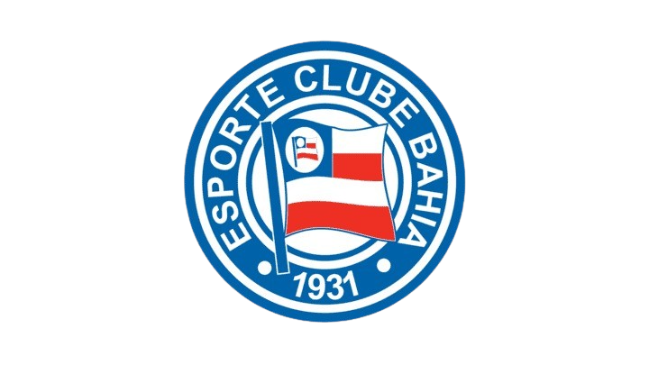

Esporte Clube Bahia
O Esporte Clube Bahia, conhecido simplesmente como Bahia ou pela sigla ECB, é um clube desportivo brasileiro de futebol da cidade de Salvador, capital da Bahia. Foi fundado em 1º de janeiro de 1931 por ex-jogadores do Clube Bahiano de Tênis e da Associação Atlética da Bahia. No mesmo ano de sua fundação, o Bahia conquistou o Torneio Início e o Campeonato Baiano de Futebol, seu primeiro título.
O clube é considerado um dos mais importantes do país e figura como a maior marca do Nordeste.
História e Destaques
A história do Esporte Clube Bahia é marcada por momentos de glória e superação. O clube se destaca pela sua hegemonia no futebol baiano, sendo o maior campeão estadual com 50 títulos, incluindo um heptacampeonato consecutivo de 1973 a 1979. Sua rivalidade com o Esporte Clube Vitória, no clássico Ba-Vi, é uma das mais tradicionais do futebol brasileiro.
Nacionalmente, o Bahia ostenta o título de primeiro campeão brasileiro da história, em 1959, e também venceu o Campeonato Brasileiro de 1988. Na Copa do Nordeste, o clube soma 4 títulos, conquistados em 2001, 2002, 2017 e 2021.
Títulos do Bahia
- Campeonato Brasileiro: 1959 e 1988;
- Copa do Nordeste: 2001, 2002, 2017 e 2021;
- Torneio Norte-Nordeste: 1961, 1963 e 1970;
- Campeonato Baiano: 1931, 1933, 1934, 1936, 1938, 1940, 1944, 1945, 1947, 1948, 1949, 1950, 1952, 1954, 1956, 1958, 1959, 1960, 1961, 1962, 1967, 1970, 1971, 1973, 1974, 1975, 1976, 1977, 1978, 1979, 1981, 1982, 1983, 1984, 1986, 1987, 1988, 1991, 1993, 1994, 1998, 1999, 2001, 2012, 2014, 2015, 2018, 2019, 2020 e 2023;
- Torneio Início do Estadual: 9 títulos, incluindo 1931, 1932, 1934, 1937, 1938, 1951, 1964, 1967 e 1979;
- Taça Estado da Bahia: 3 títulos;
- Tríplice Coroa: 1 título.